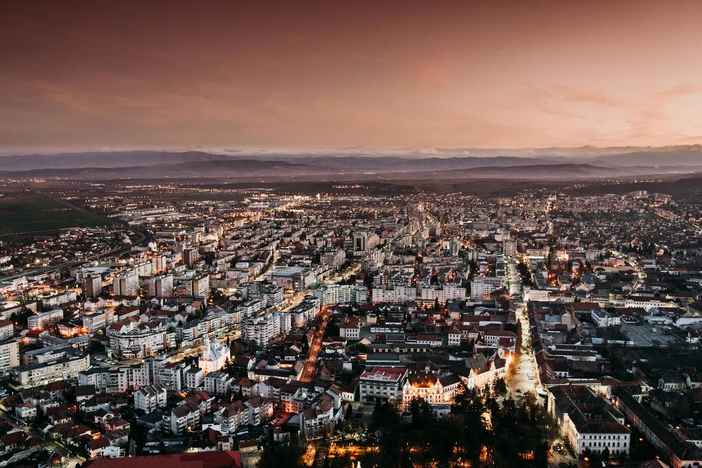

Capital, ejecución y liderazgo operativoCapital, execution and operational leadership
Proven Results Group es un grupo de inversión y operación diversificado con base en Madrid. Combinamos capital, ejecución y liderazgo operativo en seis sectores, en España y en mercados internacionales. Proven Results Group is a diversified investment and operating group based in Madrid. We combine capital, execution and operational leadership across six sectors, in Spain and international markets.
Nuestro objetivo es simple: encontrar buenos negocios, entrar con disciplina y hacerlos mejores desde dentro, con la vista puesta en décadas y no en trimestres. Our goal is simple: find good businesses, enter with discipline and make them better from the inside, with our eyes on decades, not quarters.
CONOCER AL GRUPO →LEARN MORE ABOUT PRG →Respaldamos negocios, después los construimos.We back businesses, then we build them.
La mayoría de los grupos firman un cheque y esperan. Nosotros hacemos lo contrario: tomamos posiciones donde nuestra implicación directa es la ventaja, y seguimos en la sala en cada etapa del crecimiento.Most groups write a cheque and wait. We do the opposite. We take positions where our hands-on involvement is the edge, and we stay in the room through every stage of growth.
Capital disciplinado, experiencia operativa real y un horizonte genuinamente largo. Esa combinación es la que permite que las compañías que tocamos compongan valor durante años, no trimestres.Disciplined capital, real operating experience and a genuinely long horizon. That combination is what lets the companies we touch compound over years, not quarters.
VER VISIÓN Y OBJETIVOS →SEE VISION & GOALS →Cómo pensamosHow we think
El valor duradero nace de tres cosas bien hechas: comprar los activos correctos, operarlos mejor que nadie y mantenerlos el tiempo suficiente para que ese trabajo importe.Durable value comes from three things done well: buying the right assets, running them better than anyone else could, and holding on long enough for that work to matter.
Nuestro enfoqueOur approach
Agilidad emprendedora con rigor institucional: cada inversión debe ser financieramente sólida, operativamente viable y alineada con un crecimiento responsable a largo plazo.Entrepreneurial agility with institutional rigour: every investment must be financially sound, operationally viable and aligned with responsible, long-term growth.
Tres pilares centralesThree core pillars
Inmobiliario y su gestión profesional; hostelería y operaciones de servicios; e inversiones en tecnología, bienestar y sostenibilidad, experiencia profunda y palanca operativa en cada pilar.Real estate and its professional management; hospitality and service-based operations; and technology, wellness and sustainability-driven investments, deep expertise and operational leverage in each.
Del análisis a la creación de valorFrom analysis to value creation
Cada día analizamos decenas de operaciones para encontrar el único activo con el mayor recorrido. Y después hacemos el trabajo.Every day we analyse dozens of potential deals to find the single asset with the greatest upside. Then we do the work.
Filtramos decenas de oportunidades cada día y perseguimos solo aquellas donde tenemos una ventaja real.We screen dozens of opportunities and pursue only the ones where we hold a real edge.
Entrada disciplinada, estructurada para proteger el capital y crear espacio de valor.Disciplined entry, structured to protect capital and create room for value creation.
Entramos a dirigir el negocio, mejorando el rendimiento desde dentro.We step in and run the business, improving performance from the inside out.
Renovación, reposicionamiento y mejoras operativas que componen apreciación duradera.Renovation, repositioning and operational gains compound into lasting appreciation.
Una estrategia, tres formas de participarOne strategy, three ways to take part
Cada etapa de este proceso se abre a un tipo de socio distinto. Sea cual sea tu papel, la promesa es la misma: seriedad, transparencia y ejecución.Each stage of this process opens to a different kind of partner. Whatever your role, the promise is the same: seriousness, transparency and execution.
Co-invierte en las operaciones que superan nuestro filtro, junto a un equipo que pone su propio capital y las gestiona desde dentro, con reporting claro desde el primer día.Co-invest in the deals that pass our screen, alongside a team that commits its own capital and manages them from the inside, with clear reporting from day one.
HABLAR DE CO-INVERSIÓN →DISCUSS CO-INVESTMENT →Financia adquisiciones estructuradas para proteger el capital: gobernanza sólida, activos gestionados directamente y documentación y visibilidad financiera completas.Finance acquisitions structured to protect capital: solid governance, directly managed assets and complete documentation and financial visibility.
SOLICITAR INFORMACIÓN →REQUEST INFORMATION →Súmate a la fase en la que construimos: un socio operativo con experiencia real dirigiendo negocios. Si construyes algo serio y a largo plazo, queremos conocerte.Join us where we build: an operating partner with real experience running businesses. If you're building something serious and long-term, we want to meet you.
PRESENTA TU PROYECTO →PITCH YOUR PROJECT →Lo que operamosWhat we operate
Seis sectores, una misma disciplina operativa. Cada uno es un negocio que dirigimos día a día, no una línea en una hoja de cálculo.Six sectors, one operating discipline. Each is a business we run day to day, not a line on a spreadsheet.
HosteleríaHospitality
Restauración premium, coctelería y alojamiento seleccionado en mercados europeos clave, carácter local con servicio de primer nivel e ingresos consistentes.Premium dining, cocktail venues and curated accommodation across key European markets, local character, world-class service, consistent revenue.
InmobiliarioReal Estate
Adquisición, desarrollo y gestión residencial, comercial y de alquiler de corta estancia en España, Grecia, Rumanía, Dubái y Arabia Saudí. Identificamos activos infravalorados y los transformamos.Acquisition, development and management across residential, commercial and short-term rental markets in Spain, Greece, Romania, Dubai and Saudi Arabia, transforming undervalued assets.
SaludHealthcare
Clínicas médicas, centros de belleza y bienestar y telemedicina para poblaciones urbanas en crecimiento, servicios accesibles y de calidad con flujos estables.Medical clinics, beauty and wellness centres and telemedicine for growing urban populations, accessible, high-quality services with stable cash flows.
AgriculturaAgriculture
Agricultura sostenible, agri-tech y desarrollo agrícola en Rumanía y mercados europeos seleccionados, una clase de activo estratégica con demanda creciente.Sustainable farming, agri-tech and agricultural development in Romania and select European markets, a strategic asset class with growing demand.
Servicios de automociónAutomotive Services
Centros integrales de reparación y servicio con retail integrado en Rumanía, negocios escalables y tecnificados para una demanda profesional creciente.Comprehensive repair and service centres with integrated retail in Romania, scalable, tech-enabled businesses for growing professional demand.
Servicios de gestiónManagement Services
Soporte operativo centralizado, plataformas tecnológicas y servicios compartidos para que las compañías del grupo escalen con eficiencia.Centralised operational support, technology platforms and shared services so group companies scale efficiently.
Dónde operamosWhere we operate
Presencia estratégica en mercados clave de Europa y Oriente Medio.Strategic presence across key European and Middle Eastern markets.

EspañaSpain
Base operativa central: hostelería, gestión e inmobiliarioCore operating base across hospitality, management and real estate
VER DETALLES →VIEW DETAILS →
GreciaGreece
Oportunidades inmobiliarias, de hostelería y salud en RodasReal estate, hospitality and healthcare opportunities in Rhodes
VER DETALLES →VIEW DETAILS →
RumaníaRomania
Mercado de crecimiento: agricultura, automoción y bienestarOperational growth market for agriculture, automotive and wellness
VER DETALLES →VIEW DETAILS →
EAU · Arabia SaudíSaudi Arabia
Actividad en desarrollo en hostelería e inmobiliarioDeveloping hospitality and real estate activity
VER DETALLES →VIEW DETAILS →Qué significa asociarse con nosotrosWhat partnering with us means
Invertimos nuestro propio capital en cada operación: tratamos cada negocio como trataríamos el nuestro.We invest our own capital alongside every deal, we treat each business the way we'd want ours treated.
Ponemos nuestro capital en lo que respaldamos y seguimos implicados en la operación. Cuando el negocio gana, ganamos con él, nunca a su costa.We put our own capital to work in what we back and stay involved in the operation. When the business wins, we win with it, never at its expense.
Reporting claro, decisiones disciplinadas y conversaciones honestas. Los socios siempre saben dónde está el negocio y hacia dónde va.Clear reporting, disciplined decision-making and honest conversations. Partners always know where a business stands and where it is heading.
Construimos para durar, no para la salida rápida, invirtiendo de forma sostenible en las personas, los activos y las comunidades detrás de cada compañía.We build for durability, not the quick exit, investing sustainably in the people, assets and communities behind every company we own.
Las personas detrásThe people behind it
Ejecutivos experimentados que combinan visión emprendedora con disciplina operativa.Experienced executives combining entrepreneurial vision with operational discipline.